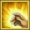
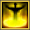
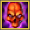

Build Priest

(obs. na build só será mostrada as habilidades que serão melhoradas, as outras habilidades que não aparecem na build sempre ficarão 1/5).
Build buffer/debuffer
Basicamente com essa build você não vai bater, principalmente em boss, ela é usada para que sua equipe cause muito mais dano, obs. Use sempre essa build quando estiver em grupo e use sempre a marca mística no inimigo para que ele perca 30% de defesa e logo depois use armistício para que o inimigo receba 25% a mais de dano, assim o inimigo receberá uma quantidade absurda a mais de dano durante 9 segundos, esse sempre será seu combo com essa build. (Recomendo usar essa build sempre que for fazer torre ou boss em grupo).
Lagrimas de Harad

3/5
Um ataque que causa dano mágico ao inimigo no valor de 80 do dano base e 125% do poder mágico do personagem, ela tem 80% de chance de causar dano em mais 2 alvos; 65% de chance de causar dano em mais 3 alvos; 50% de chance de causar dano em mais 4 alvos; 35% de chance de causar dano em mais 5 alvos e 20% de chance de causar dano em mais 6 alvos.
Relíquias Recomendadas
- Relíquia de habilidade atordoante
- Relíquia do poder mágico
- Grã-relíquia de habilidade de punição
- Relíquia de ataque unido
Relíquia de ataque
Relíquia de defesa
Relíquia de aprimoramento
Relíquia de grupo
Armistício
5/5
Causa a penalidade ''Trégua'' ao inimigo por 7.2 segundos. Sob o efeito, o alvo da habilidade não pode atacar o personagem, e o personagem não pode atacar o alvo. No entanto, os personagens aliados passam a causar 25% a mais de dano no alvo.
Relíquias Recomendadas
- Relíquia do silêncio
- Relíquia de flexibilidade
- Grã-relíquia da concentração
- Relíquia de controle unido
Relíquia de ataque
Relíquia de defesa
Relíquia de aprimoramento
Relíquia de grupo
Toque de cura
5/5
Restaura a vida do personagem ou aliado o equivalente a 130 unidades e 155% do poder mágico do personagem. A quantidade de vida restaurada aumenta á medida que a habilidade é melhorada
Relíquias Recomendadas
- Relíquia terrível da infecção mortal
- Relíquia de destreza
- relíquia mágica da resiliência
- Relíquia de cura exclusiva
Relíquia de ataque
Relíquia de defesa
Relíquia de aprimoramento
Relíquia de grupo
Aura de valor
4/4
Aumenta em 18% o poder mágico e fisico do personagem e dos membros do grupo que estão no mesmo local que o personagem enquanto a habilidade está ativa. O poder do efeito aumenta á medida que a habilidade é melhorada
Redenção
3/4 (obs. Caso você tenha os 2 pontos de habilidade do talento)
Restaura a vida equivalente a 165% do poder mágico do personagem de 7 aliados e do personagem na área selecionada, e remove 3 efeitos negativos dos aliados.
Auxílio Divino
4/4
Aplica um auxílio ao seu personagem ou a um membro do grupo por 30 seg. O efeito aumenta em 15% o ataque crítico, em 30% a força do dano crítico e em 15% a velocidade de ataque.
Quando estiver em grupo sempre use o auxílio no membro com maior damage do grupo.
Marca Mística
4/4
Aplica a penalidade ''Marca Mística'' ao inimigo por 15 segundos. O efeito reduz em 30% as defesas fisica e mágica do alvo. Quando o efeito expirar, o alvo e todos os adversários em um raio de 1 metro receberão dano mágico equivalente a 185% do poder mágico do personagem.